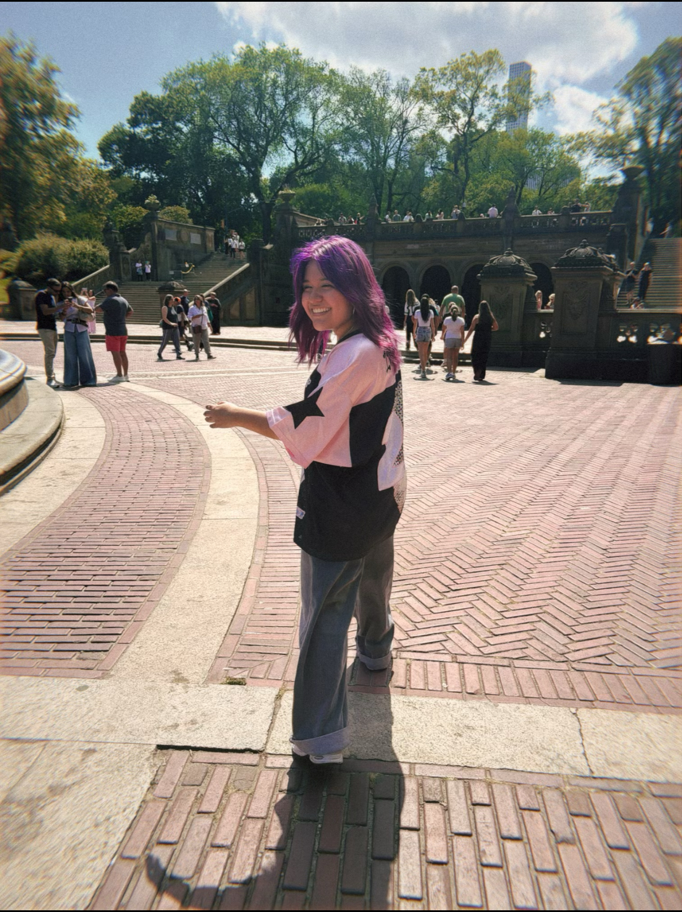

Hello my name is Jaylene! I like to take pictures of nature and journal. The kind of media I would like to make is one that I can connect with my culture. My family is from Peru and I would like to showcase that part of me in at least one of my projects. I draw inspiration from anything colorful or dreamlike such as the art of Aya Takano. Honestly, anything that looks shiny catches my eye as well. That is why such vibrant expression is something that I prioritize when it comes to my projects. Some themes I want to explore are emotions and I would like to show that with the use of color, as they give an outward telling of what goes inside people’s minds. I also want to focus on identity, but I'm still unsure on how to portray this. In MEDPL 150 I would like to figure out what kind of creative practice I truly enjoy and will be willing to continue practicing even after the semester ends. I would also like to eventually make projects that combine fantasy with reality as it is something I would personally enjoy viewing. I just hope that I can get more creative with my ideas because right now I don’t consider myself to be creative. I aim to develop my creativity by thinking of new ways to view media and the world around me. With the amount of creative practice we will be getting from this class, I truly believe all of this is possible.
Setting up the website was sort of easy since I did use HTML once like 3 years ago to make a website where I introduced the things I liked. I of course did forget a few things such as how to add an image and I didn’t have to use a footer either until now. It was fun to see everything come together. A big challenge for me was Seeing how I had fun setting all this up, I hope to have more fun in this course and to use all the things I will learn in this class, outside of class.